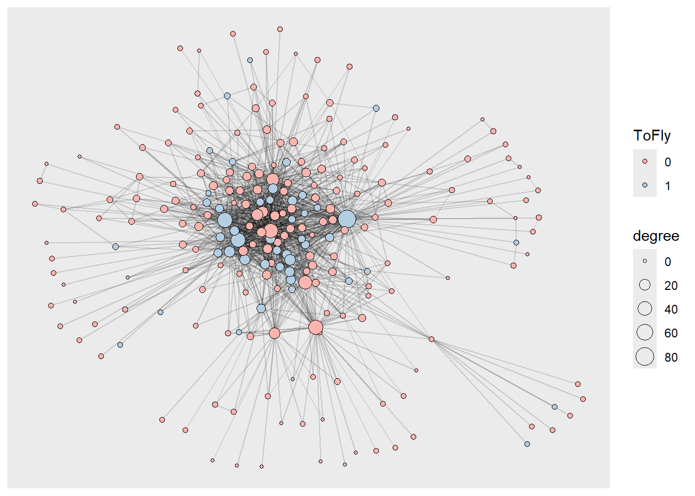
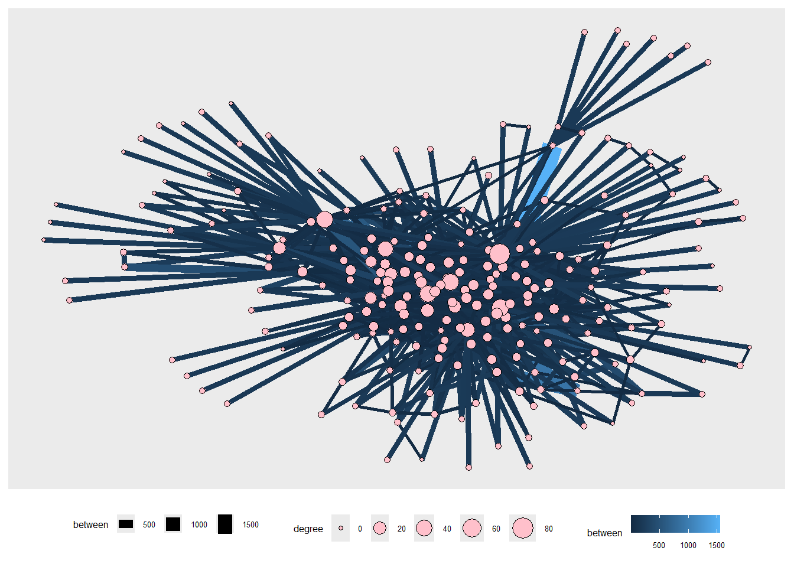
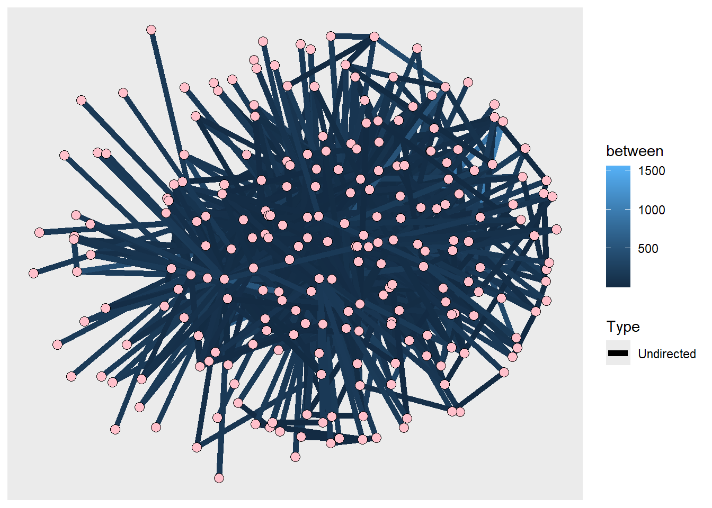

Show me the Code
library(tidyverse)
library(igraph)
library(tidygraph)
library(ggraph)
library(graphlayouts)
library(tinytable)I am going to examine data reguarding airlines connectivity and make a few network visualisations
library(tidyverse)
library(igraph)
library(tidygraph)
library(ggraph)
library(graphlayouts)
library(tinytable)a_nodes <- read_csv("../Data/airlines_nodes.csv")Rows: 235 Columns: 8
── Column specification ────────────────────────────────────────────────────────
Delimiter: ","
chr (3): Label, Code, City
dbl (5): Id, latitude, longitude, ToFly, Visits
ℹ Use `spec()` to retrieve the full column specification for this data.
ℹ Specify the column types or set `show_col_types = FALSE` to quiet this message.a_edges <- read_csv("../Data/airlines_edges.csv")Rows: 1297 Columns: 4
── Column specification ────────────────────────────────────────────────────────
Delimiter: ","
chr (1): Type
dbl (3): Source, Target, Weight
ℹ Use `spec()` to retrieve the full column specification for this data.
ℹ Specify the column types or set `show_col_types = FALSE` to quiet this message.glimpse(a_nodes)Rows: 235
Columns: 8
$ Id <dbl> 0, 1, 2, 3, 4, 5, 6, 7, 8, 9, 10, 11, 12, 13, 14, 15, 16, 17…
$ Label <chr> "Adams Field Airport", "Akron/canton Regional", "Albany Inte…
$ Code <chr> "LIT", "CAK", "ALB", "CHO", "ABQ", "AEX", "APN", "ACV", "AVL…
$ City <chr> "Little Rock, AR", "Akron/Canton, OH", "Albany", "Charlottes…
$ latitude <dbl> 34.72944, 40.91611, 42.73333, 38.13333, 35.04028, 31.32750, …
$ longitude <dbl> -92.22444, -81.44222, -73.80000, -78.45000, -106.60917, -92.…
$ ToFly <dbl> 0, 0, 0, 1, 0, 0, 0, 0, 0, 1, 1, 0, 0, 0, 1, 0, 0, 0, 0, 0, …
$ Visits <dbl> 105, 123, 129, 114, 105, 93, 135, 123, 105, 90, 132, 117, 13…glimpse(a_edges)Rows: 1,297
Columns: 4
$ Source <dbl> 0, 1, 1, 2, 3, 4, 4, 5, 7, 7, 8, 9, 9, 9, 9, 10, 10, 10, 10, 10…
$ Target <dbl> 109, 36, 61, 152, 104, 132, 168, 217, 173, 177, 53, 105, 106, 1…
$ Type <chr> "Undirected", "Undirected", "Undirected", "Undirected", "Undire…
$ Weight <dbl> 10, 10, 10, 10, 10, 10, 10, 10, 10, 10, 10, 10, 10, 10, 10, 10,…Id: Identifier for each airport
Label: Name of the airport
Code: Airport code
City: City where the airport is located
latitude: Latitude of the airport
longitude: Longitude of the airport
ToFly: Status indicator
Visits: Measure of people’s activity in airports
Source: Origin airport ID
Target: Destination airport ID
Type: Route type
Weight: Frequency of flights
air_nodes <- a_nodes %>%
mutate(
across(where(is.character), as.factor)
) %>%
mutate(
ToFly = as.factor(ToFly)
)
air_edges <- a_edges %>%
mutate(
Source = as.factor(Source),
Target = as.factor(Target),
Type = as.factor(Type)
)air_graph <- tidygraph::tbl_graph(nodes = air_nodes,
edges = air_edges,
directed = TRUE)
air_graph# A tbl_graph: 235 nodes and 1297 edges
#
# A directed simple graph with 1 component
#
# Node Data: 235 × 8 (active)
Id Label Code City latitude longitude ToFly Visits
<dbl> <fct> <fct> <fct> <dbl> <dbl> <fct> <dbl>
1 0 Adams Field Airport LIT Litt… 34.7 -92.2 0 105
2 1 Akron/canton Regional CAK Akro… 40.9 -81.4 0 123
3 2 Albany International ALB Alba… 42.7 -73.8 0 129
4 3 Albemarle CHO Char… 38.1 -78.4 1 114
5 4 Albuquerque International ABQ Albu… 35.0 -107. 0 105
6 5 Alexandria International AEX Alex… 31.3 -92.5 0 93
7 6 Alpena County Regional APN Alpe… 45.1 -83.6 0 135
8 7 Arcata ACV Arca… 41.0 -124. 0 123
9 8 Asheville Regional Airport AVL Flet… 35.4 -82.5 0 105
10 9 Austin-bergstrom Internati… AUS Aust… 30.2 -97.7 1 90
# ℹ 225 more rows
#
# Edge Data: 1,297 × 4
from to Type Weight
<int> <int> <fct> <dbl>
1 1 110 Undirected 10
2 2 37 Undirected 10
3 2 62 Undirected 10
# ℹ 1,294 more rowsComments
This is done to structure the raw Airlines Network dataset to a structured dataset for the network visualisations
air_graph %>%
activate(nodes) %>%
mutate(degree = centrality_degree()) %>%
ggraph(layout = "fr") +
geom_edge_link0(alpha = 0.15)+
geom_node_point(aes(fill = ToFly, size = degree), shape = 21)+
scale_fill_brewer(palette = "Pastel1") 
Comments
The few airports, that is the points in the middle, are very important since they have a lot of connections (degree of nodes). This suggests that the airline system depend on them. The smaller points are the small airports with only a few to very few connections and they are dependent on the major airports in the middle.
air_graph %>%
activate(edges) %>%
mutate(between = centrality_edge_betweenness()) %>%
activate(nodes) %>%
mutate(degree = centrality_degree()) %>%
ggraph(layout = "fr") +
geom_edge_link0(aes(linewidth = between, colour = between)) +
geom_node_point(aes(size = degree),colour = "black", fill = "pink", shape = 21) +
theme(legend.text = element_text(size = 5),
legend.title = element_text(size = 6),
legend.key.size = unit(0.4, "cm"),
legend.position ="bottom")Warning: The `trans` argument of `continuous_scale()` is deprecated as of ggplot2 3.5.0.
ℹ Please use the `transform` argument instead.
Comments
Only a few routes are very important since only a few routes are represented by thick and lighter blue lines. The other routes are not very important as they are represented by thin and darker blue lines. This means only a small number of routes are used over and over again to connect to different airports in the network. The routes which have high betweeness between them, that is the thicker, lighter blue routes, connect airports to each other, making them extremely important. If any one of these airports are affected, it would in turn affect a lot of dependent airports.
air_graph %>%
activate(nodes) %>%
mutate(degree = centrality_degree()) %>%
ggraph(layout = "kk") +
geom_edge_link0(alpha = 0.15) +
geom_node_point(aes(fill = Visits, size = degree), shape = 21) +
scale_fill_viridis_c()
Comments
The most visited airports are scattered all across, the bigger and smaller points (airports) both are visited a lot. This implies that the number of connections of the airports (size of points) does not affect the activity of people in that airport. There are some major airports which are less visited than the smaller airports suggesting that the number of flights do not depend on the number of connections.
air_graph %>%
activate(edges) %>%
mutate(between = centrality_edge_betweenness()) %>%
ggraph(layout = "kk") +
geom_edge_link0(aes(linewidth = Type, colour = between)) +
geom_node_point(size = 3, colour = "black", fill = "pink", shape = 21)Warning: Using edge_width for a discrete variable is not advised.
Comments
This network shows that all flight routes are undirected. It implies that the if the airports have connections between them, it has both to and fro flights between them.
air_graph %>%
activate(nodes) %>%
mutate(degree = centrality_degree()) %>%
ggraph(layout = "linear", circular = TRUE) +
geom_edge_link0(aes(edge_colour = Weight)) +
geom_node_point(aes(colour = degree), size = 4) +
scale_edge_color_distiller(palette = "YlOrRd") +
scale_colour_viridis_c()
Comments This shows how frequent the flights are between the airports. Most flights’ frequency is below 250. Only a select few flights have more than 250 in terms of frequency which are represented in a lighter red colour. Also shows how it’s not necessary for only major airports to have more flight frequency. Some of the smaller airports (points coloured in blues and purples) have more flight frequency than the major airports (points coloured in yellows and greens).